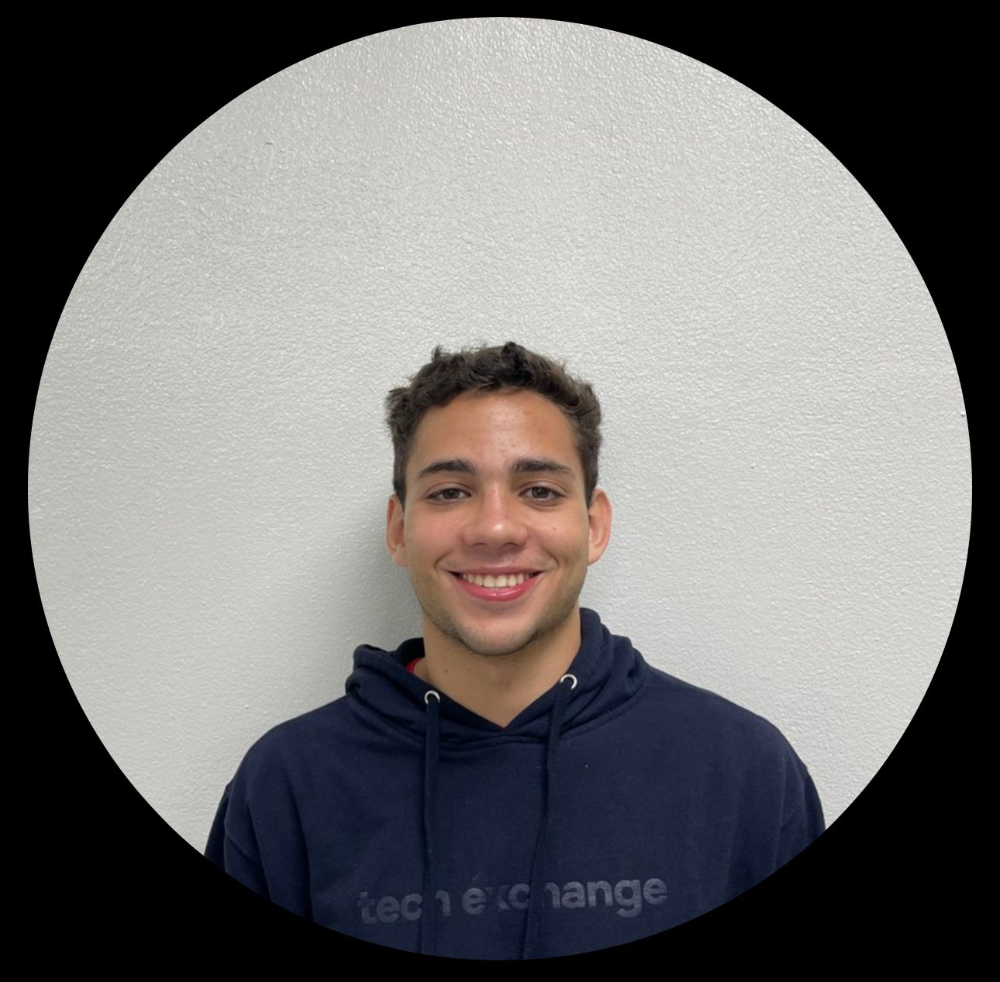

Why It Matters
Old Way
Traditional notes overload some learners.
ClassMate answers in bite-sized clips, cutting study time.
Objective
Goal: convert each lecture into a chatbot that cites audio snippets for evidence.
Audio Pipeline
Transcribe
→
Chunk
→
Embed
→
Upload
The audio goes through these steps to become searchable.
Chatbot Flow
Ask
→
Vectorize
→
Retrieve Clips
→
Answer
Your question finds relevant audio clips to generate an answer.
Architecture
Frontend
↓
API
↓
Processing
↓
pgvector DB
↓
AI Engine
The system uses distinct layers for user interaction, logic, data storage, and AI.
Layers: Frontend ↠ API ↠ Processing ↠ pgvector ↠ AI engine.
Team & Contact
This capstone project was built by a dedicated four-person crew.
Alejandro Isaac
Carlos Leyva
Robdiel Melendez

Jose Cordero
Reach us at: jose.cordero22@upr.edu